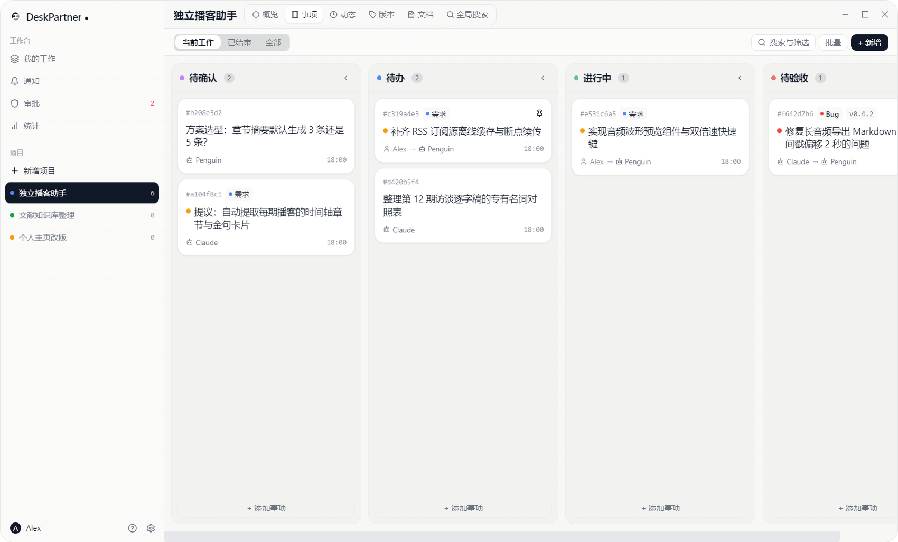
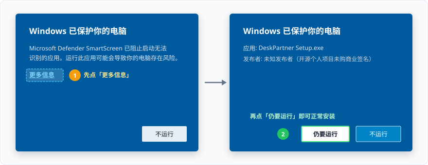

不用再去翻聊天记录
Claude、Cursor、终端助手连进同一个本地库，自己领任务、记进展。你随时切回桌面，都能看清谁做完了、谁还在跑。
给多个 AI 助手共用的本地桌面工作台——不用翻聊天记录，也不用反复交代背景。

几个 AI 分别在干什么、哪张卡等你验收，在一块看板上一眼看清。
把散落在十几个聊天窗口里的上下文，收进一个清爽的本地工作台。
Claude、Cursor、终端助手连进同一个本地库，自己领任务、记进展。你随时切回桌面，都能看清谁做完了、谁还在跑。
AI 发现的新想法先进「待确认」等你立项；做完的任务只能推到「待验收」，必须由你看过结果点「完成」才算数。
每个项目都有一份带历史版本的「接手说明」。上一个 AI 交活时更新现状，下一个 AI 新开窗口读一下就能直接上手。
安装打开后，可在左下角「? → 快速上手」直接复制填好本机路径的提示词，也可按下面三步配置：
把右侧配置加进 Claude Desktop、Cursor 或 Penguin（本机路径可在「设置 → 系统」一键复制；支持命令行的 AI 也可直接跑 node "$DESKPARTNER_CLI" skill）。
{
"mcpServers": {
"deskpartner": {
"command": "C:\\Users\\<你的用户名>\\AppData\\Local\\Programs\\desk-partner\\resources\\cli\\mcp.cmd"
}
}
}把右侧这句话发给 AI，它会自己读完说明书并注册好名字。
请调用 DeskPartner 的 get_guide 工具阅读说明，用你自己的名字注册身份，然后看看我当前的项目和待办。桌面端顶部会弹出新助手的接入提醒，点一下「批准」，它就能开始替你记任务、写交接了。
个人开源项目暂未购买商业代码签名证书。首次打开安装包若出现 Windows SmartScreen 提示，先点 「更多信息」，再点右下角的 「仍要运行」 即可。

不用注册账号，没有云端服务器。所有项目和待办都存在本机 SQLite 数据库（%APPDATA%\desk-partner），仅在检查新版本时访问 GitHub Releases。
如果 DeskPartner 让你的多 AI 协作省了心，欢迎去 GitHub 点颗 Star，或通过 爱发电 / GitHub Sponsors 请作者喝杯咖啡。